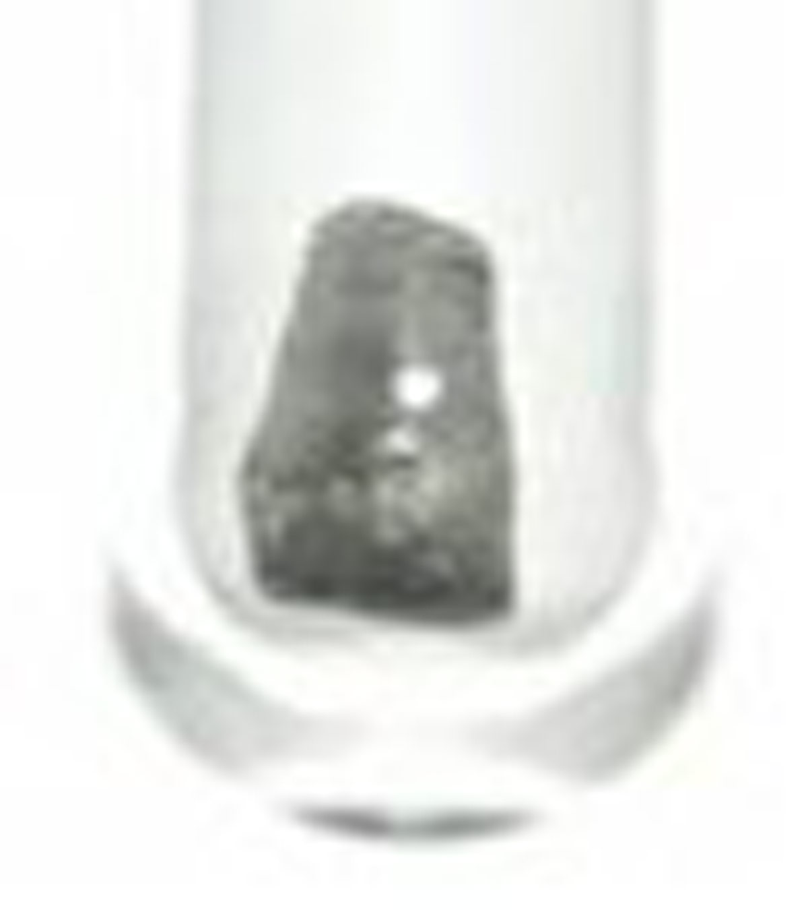
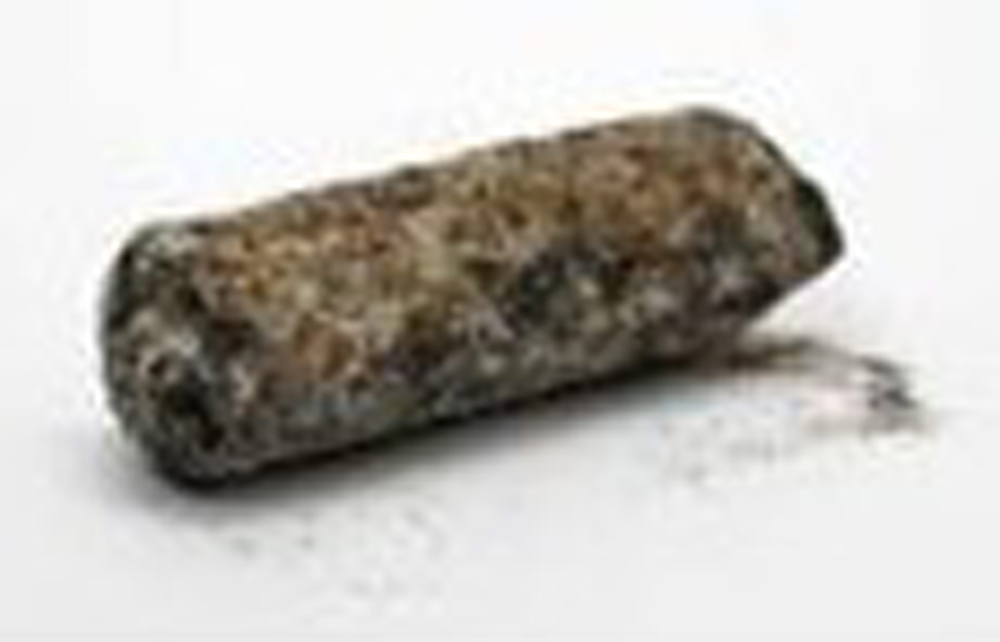

Crookes discovered the transition metal thallium, atomic number 81, in 1861. (1) The name originated from the Greek word “thallos” which means green shoot or twig because of the green spectral line it produces. (1) In the absence of oxygen the metal is a metallic bluish-gray; however, it is strongly oxidized in air and water, causing it to corrode and become a dull color. (4) The most common oxidation states for thallium are (I) and (III). Thallium (I) behaves like the group 1 alkali metals, whereas Thallium (III) behaves more like aluminum, a group 3 element. (2) Thallium is tasteless and odorless; therefore, its present in our everyday lives it is not easily detectable and can be very toxic.

Figure 1. Thallium in an oxygen deficient environment (11).

Figure 2. Thallium in the presence of oxygen (12).
Uses and Problems
Historically, before its toxicity was known, thallium was used medically for the treatment of multiple infections. These infections include ringworm in the scalp, typhus, tuberculosis, gonorrhea and malaria. (3) Throughout history, thallium has also been used to kill rats and squirrels. (4) It has been present in low temperature thermometers, mercury lamps, types of glasses that have an increased melting point, imitation jewelry, fireworks, pigments, and in alloys to increase corrosive resistance; however, it is not used anymore due to the knowledge of the toxic effects. (2) The major use of thallium has been in electronics—semiconductors and crystals for infrared instruments. (4) The use of thallium in the majority of these products took a long time to be discontinued but the links between thallium and health problems were known by at least as early as 1932 in California due to the use as a rodent poison. (3)
It is important to realize that even though most uses of thallium have been discontinued it is still very much present in our daily lives. There are approximately 1,000 tons released into the environment per year, primarily from power, cement and smelting plants. Of the 1,000 tons that are dispersed, 350 tons are in vapor and dust and 500 tons are in fluids and solid waste. The additional 150 tons are from a variety of sources. Interestingly, some thallium is present in cigarette smoke. Thallium is introduced into the body by inhalation, skin contact, or ingestion. Humans on a daily basis consume approximately 2 ppb of thallium from food. (5)
It is important to note that thallium can be used for illegal reasons too, due to its tasteless and odorless properties. It has been used to induce an abortion and for poisoning. (4) However, controversies about intentional versus unintentional poisoning have aroused due to the low concentration of thallium needed for toxicity. An example of a poisoning case involves Zhu Ling from China. Zhu Ling was a university student in China who started to reveal symptoms of thallium poising in 1994. However, she was not officially diagnosed until 1995 because of denial of exposure to thallium. Sadly, by the time she was treated she had already suffered greatly including loss of muscular control and neurological damage; therefore limiting her ability to speak. The case is still unsolved as to whether or not she was poisoned by her roommate. (6)
Health Problems
The diagnosis of thallium poisoning can be difficult because the detection methods are relatively inefficient due to the low amounts in the body. (7) Generally, thallium poisoning presents itself within one to five days (8) and can be detrimental within eight to ten days, or even sometimes as quickly as a few hours. (7) The first symptoms of intoxication are gastrointestinal irritations and nerve damage which later leads to hair loss, damage to the liver, kidney, intestinal and testicular tissues. (9) Problems tend to arise when the concentration of thallium in the blood or urine is greater than 1 mg/L. (9) Inside the body, the thallium is absorbed through the skin, gastrointestinal and respiratory tracts, in which it is transferred throughout the body into the organs, placenta, and across the blood-brain barrier. Small amounts can be excreted from the body through the hair, saliva, kidney, skin, sweat, breast milk and the gastrointestinal tract. (7) It is important to note that there is no data linking thallium poisoning with reproduction, birth defects or cancer. (7)
Medical Treatment
Several therapies are available if thallium poisoning occurs yet even with these therapies there are no federally approved treatments. (10) It is important to realize that some of the effects of the poisoning cannot be reversed. At the initial exposure the skin or eyes should be flushed immediately with water. If a thallium substance is consumed, vomiting should be induced and then patients should undergo gastric aspiration and lavage. An oral treatment that can be used is Prussian Blue (ferric hexacyanoferrate (II), Fe4III[FeII(CN)6]3•15H2O). (7,13)

Figure 3. Prussian Blue Molecular Structure (13).
Thallium is first present in the body in the intestines, and then the ions are absorbed into the bile and finally released back into the gastrointestinal tract and then can be absorbed again. Due to the high affinity of Prussian blue for thallium ions, in the presence of this agent, ion exchange can occur. (10) Medically, Prussian blue is administered orally and inhibits the absorption into the bile, which as stated previously, can lead to the absorption into the gastrointestinal tract. The ion exchange causes the thallium ions to be concentrated and excreted, therefore reducing the toxic effects. Prussian blue is a good therapy because it is not absorbed in large quantities in the gastrointestinal tract. (10)
References
(2) Thallium. Chicago: World Health Organization, 1996. 19,20.
(3) Tsai, Y.; Huang, C.; Kuo, H.; Wang, H.; Shen, W.; Shin, T.; Chu, N. Neurology. 2006, (27) 291-295.
(4) Kazantzis, F. Environmental Geochemistry and Health. 2000, (22) 275-280.
(5) Agency for Toxic Substances and Disease Registry (ATSDR). 1992 Toxicological profile for Thallium. Atlanta, GA: U.S. Department of Health and Human Services, Public Health Service.
(6) “Zhun Ling (poisoning victim)” Wikipedia.org. Accessed September 7, 2008.
(7) Thallium and Thallium Compounds Health and Safety Guide. Number 102. Chicago: World Health Organization, 1996. 11-16.
(8) Lee, A. G. The Chemistry of Thallium. New York, NY: Elsevier Compnay, 1971. 1-8.
(9) Selinus, Olle. Essentials of Medical Geology : Impacts of the Natural Environment on Public Health. New York: Academic P, 2005. 197-98.
(10) Federal Register. Vol 68, No. 23/ Tuesday, February 4, 2003. p. 5646.
Image Credits
(11) chemistry.about.com
(12) Wikipedia, Corroded thallium rod.
{kind=link}
(13) Robin, M. Electronic Configurations of Prussian Blue. 1962. (1)2 337.
Author: Evan Joslin.
- Alzheimer's 1 2
- Antibiotics
- Antifouling Paint
- Arthritis
- Ayurvedic Medicine
- Breast Feeding
- Cancer Therapy
- Cattle Feed
- Cerebral Ischemia
- Chelation Therapy
- Chernobyl
- Chicken Feed
- Chocolate
- Cigarettes
- Coal 1 2
- Copper Mining
- Cremation
- Diabetes
- Electronic Waste
- Hat Making
- Hard Metal Disease
- Hybrid Cars
- Imaging 1 2 3 4
- Industrial Pollution
- Jewelry Allergy
- Lead Poisoning
- Lewisite
- Magnetic Particles
- Makeup
- Mountain Top Removal
- MRI Imaging
- Neurotoxicity
- Nuclear Power
- Nuclear Weapons
- Ouch Ouch Disease
- Peripheral Neuropathy
- PET Imaging
- Photodynamic Therapy
- Phytoremediation
- Pregnancy
- Radioactivity 1 2
- Seafood
- Sunscreens
- Tattoos
- Vaccines
- Wound Healing